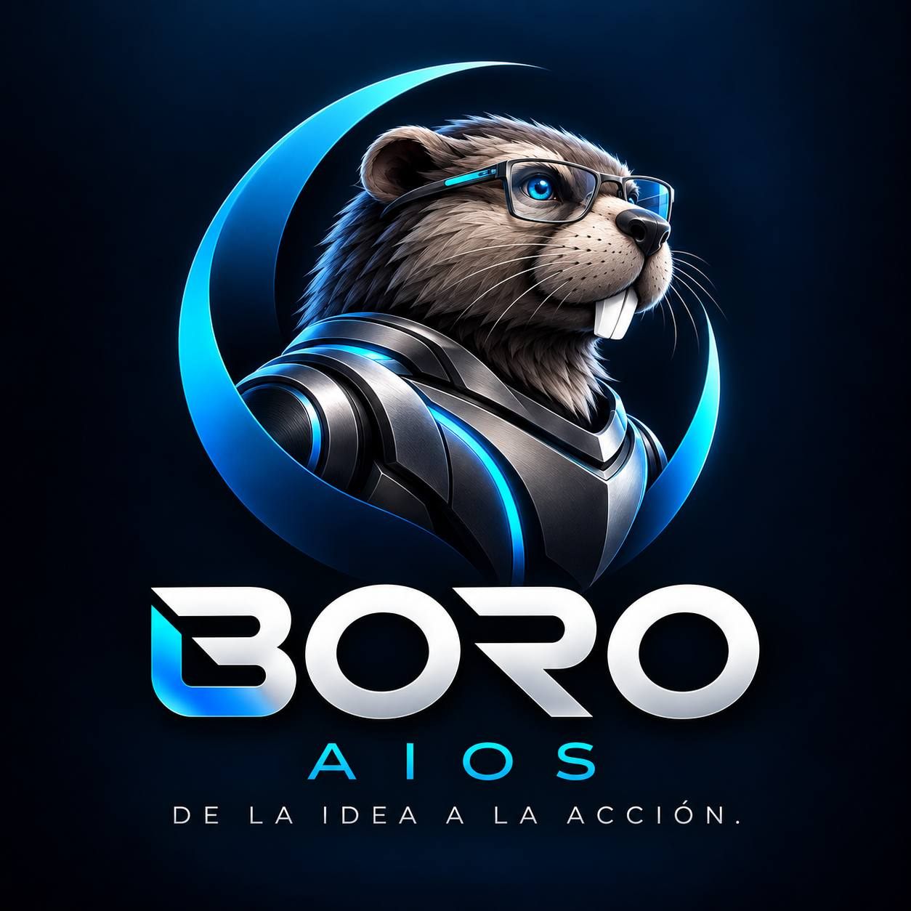
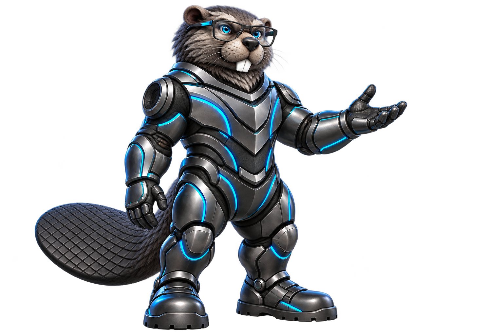

Lo importante, a mano y a tiempo.
Pídele que recuerde una cita, un pago o algo que no quieres olvidar. Guarda una idea, pregunta por lo que compartiste y organiza tus pendientes para saber por dónde empezar.
Tu día y tu negocio, con continuidad
BORO AIOSConoce BoroCONOCE A BORO · TU ASISTENTE PERSONAL
Habla o escribe. Boro te ayuda a recordar, pensar y hacer.
Boro es tu asistente personal con inteligencia artificial. Recuerda lo importante, ordena tus ideas y te ayuda a llevarlas a la práctica. Desde resolver algo de tu día a día hasta construir un proyecto o hacer avanzar tu emprendimiento.
01 / EL INSTINTO DE CONSTRUIR
Cuéntale lo que necesitas con tus propias palabras. Boro reúne la información que eliges compartir, te ayuda a poner las ideas en orden y encuentra contigo el siguiente paso. Así puedes retomar tus asuntos sin empezar de cero cada vez.

Vista estática. Explora las seis capacidades con los botones.
Guarda lo que quieres retomar y programa el aviso con la fecha que confirmes.
UN CEREBRO. MUCHAS POSIBILIDADES.
La persona representa tu idea; Boro la organiza en su computador. Usa los botones para escribir y ver tu plan. Girar la escena es opcional. Al completar pasos, las cuatro piezas del monitor muestran tu avance.
Ejemplos ilustrativos. Cada conexión requiere herramientas habilitadas y tus permisos.
02 / CONECTA TU MUNDO
Conoce el universo de Boro.
Boro atraviesa una ciudad digital; una chispa de energía conecta sus edificios. Una representación visual de nuestra idea: unir conocimiento y acción.
MENOS INFORMACIÓN DISPERSA. MÁS CONTINUIDAD.
Una cita que no quieres olvidar. Algo que necesitas entender. Una idea que todavía no sabes por dónde empezar. Boro te ayuda a pasar de tenerlo en la cabeza a saber qué hacer y avanzar. Guarda lo que decides compartir para que puedas continuar después.
El resultado se revisa.
El control sigue siendo tuyo.
03 / LO QUE PODEMOS CONSTRUIR
Un mismo asistente para muchas necesidades. Puedes hablarle o escribirle para recordar, entender, crear, organizar y hacer. Estos son algunos ejemplos de lo que puedes pedirle.
Pídele que recuerde una cita, un pago o algo que no quieres olvidar. Guarda una idea, pregunta por lo que compartiste y organiza tus pendientes para saber por dónde empezar.
Tu día y tu negocio, con continuidadUna página web, una aplicación, una herramienta interna o un nuevo proceso para tu emprendimiento. Boro te ayuda a definirlo, construir una primera versión y probarla contigo antes de ponerla en marcha.
Webs, aplicaciones y proyectos digitales · alcance acordadoPregúntale qué dice un documento, pide una explicación sencilla o transforma tus notas en una carta, una propuesta, una presentación o una hoja de cálculo. Revisa las fuentes y el resultado antes de usarlo.
Word, Excel, PDF y presentacionesPrepara el mensaje, los contenidos y las piezas de una campaña. Con tu cuenta conectada, Boro puede ayudarte a configurarla; tú apruebas el presupuesto y la publicación.
De la oferta a una campaña preparadaConfigura herramientas y tu entorno de trabajo, organiza archivos y encadena pasos para completar una tarea. Pídeselo desde el celular con tu PC encendido y conectado.
Tu PC preparado y con acceso autorizadoConecta formularios, hojas de cálculo y avisos para registrar solicitudes, recordar seguimientos o generar reportes. Diseña, prueba y activa con Boro las rutinas de tu negocio.
Automatizaciones a tu medidaDE LA PETICIÓN AL RESULTADO
No necesitas saber qué botón pulsar ni cómo explicar cada paso. Dile qué quieres lograr. Boro te ayuda a ordenar lo necesario, trabaja con las herramientas que autorices y te pide lo que falte para continuar.
Tú eliges qué guardar y confirmas las fechas. Las notificaciones necesitan estar habilitadas en tus dispositivos.
TU INFORMACIÓN. TUS DECISIONES.
Comparte sólo lo que necesitas. Conserva el control de tus cuentas y tus decisiones.
Documentos, carpetas y herramientas se habilitan con un alcance acordado.
Los recuerdos se pueden corregir y las fuentes ayudan a contrastar la información.
Enviar, borrar o publicar requiere una confirmación clara antes del efecto real.
DOS FORMAS DE EMPEZAR
Boro no está pensado para un solo oficio ni para un solo tipo de proyecto. Empieza por tus necesidades y se conecta a las herramientas que decidas usar.
PARA TI Y LO QUE ESTÁS CONSTRUYENDO
Un asistente para acompañarte en el día a día y en lo que quieres construir. Habla o escribe para resolver dudas, recordar asuntos, organizarte, crear y avanzar con tus tareas, ideas o emprendimiento.
Inicio acompañado: elegimos tus primeras tareas y validamos las conexiones. El alcance, las cuentas y los costos de servicios externos se acuerdan contigo.
PARA EQUIPOS Y OPERACIONES
El siguiente paso cuando el trabajo involucra a un equipo: conectar conocimiento, herramientas y procesos con responsabilidades claras.
Implementación a medida. Los espacios compartidos y permisos por rol se diseñan y validan por proyecto.
El precio y el alcance se definen después de entender tu necesidad. No se activa un servicio ni se realiza un cobro desde esta página.
ANTES DE EMPEZAR
Para lo que necesitas recordar, entender, organizar o llevar a la práctica. Puedes pedir ayuda con una duda, un documento, tus pendientes, una idea o un proyecto. También puede trabajar con herramientas conectadas para crear y ejecutar tareas. Personal / Emprendedores se adapta a ti; Empresa añade una implementación para coordinar equipos y procesos. Cada conexión tiene un alcance acordado.
Boro te ayuda a pensar y a hacer: explica, organiza información, crea contenido y ejecuta tareas con las herramientas que autorices. No sustituye tu criterio ni puede garantizar que resuelva cualquier situación. Tú revisas los resultados y decides qué se envía, se publica o se pone en marcha.
No. Háblale o escríbele como lo harías con alguien que te ayuda. Cuéntale qué necesitas, sin comandos ni palabras técnicas. Si falta un dato, te lo pide. Te acompañamos en la configuración inicial.
Puedes conversar desde la web en el celular o el computador. Para ejecutar acciones en tu PC, este debe estar encendido, conectado y tener el agente configurado. Las capacidades se validan en tus dispositivos.
Se trabaja con los archivos que autorices dentro del alcance acordado. El piloto define fuentes, accesos, conservación y respaldo. La biblioteca permite revisar documentos y referencias; una lectura parcial no se presenta como completa.
Sí, mediante una implementación a medida. Primero se define un proceso y sus fuentes autorizadas. Los accesos compartidos, roles e integraciones se diseñan y validan; no se ofrecen como una instalación empresarial automática.
Las acciones sensibles deben pasar por una confirmación explícita. El alcance y las reglas de cada conexión se acuerdan antes de habilitarla.
La primera conversación sirve para entender la tarea que quieres resolver. Con eso se define un piloto, su alcance, sus costos y cómo comprobar el resultado. No hay una tarifa universal publicada.
EL SIGUIENTE PASO ES UNA CONVERSACIÓN
¿Qué te gustaría recordar, resolver o hacer realidad?
Cuéntanos qué necesitas en tu día a día o qué tienes en mente. Te mostramos cómo puede ayudarte Boro y preparamos contigo las primeras tareas y conexiones.
MUCHO GUSTO. SOY BORO.
Una nueva identidad para una misma convicción: el conocimiento sirve más cuando nos ayuda a avanzar.
Volvamos al principio ↑